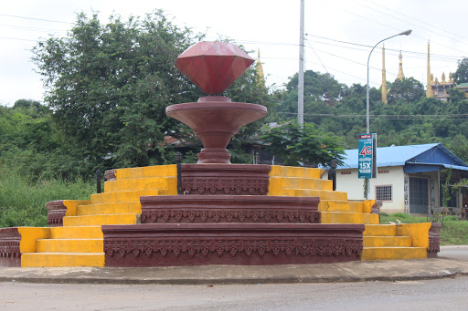

ការពិពណ៏នាអំពី ខេត្តនីមួយៗនៅក្នងប្រទេសកម្ពុជា
ទំព័រដើម
តាកែវ
ភ្នំពេញ
កែប
ព្រះសីហនុ
ស្វាយរៀង
កំពង់ធំ
បាត់ដំបង
ពោធ៏សាត់
សៀមរាប
រតនគីរី
មណ្ឌលគីរី
ក្រចេះ
ត្បូងឃ្មុំ
កំពង់ចាម
ព្រៃវែង
កណ្តាល
ឧត្តរមានជ័យ
កំពង់ឆ្នាំង
កំពង់ស្ពឺ
បន្ទាយមានជ័យ
កោះកុង
ប៉ៃលិន
កំពត
ស្ទឹងត្រែង
ព្រះវិហារ
ទំនាក់ទំនង
ខេត្តប៉ៃលិន

ព័ត៌មានសង្ខេបអំពីខេត្តប៉ៃលិន
> ប៉ៃលិន ជាខេត្តមួយឋិតនៅជ្រុងខាងជើងនៃជួរភ្នំក្រវាញ ត្រូវជាភាគខាងលិចនៃព្រះរាជាណាចក្រកម្ពុជា មានព្រំប្រទល់ជាប់ជាមួយប្រទេសថៃ។ ខេត្តនេះព័ទ្ធជុំវិញដោយខេត្តបាត់ដំបង និង ត្រូវបានផ្ដាច់ចេញពីខេត្តបាត់ដំបង ឱ្យក្លាយជាតំបន់រដ្ឋបាលដាច់ដោយឡែក បន្ទាប់ពីការចុះចូលរបស់ក្រុមលោកអៀង សារី នៅឆ្នាំ ១៩៩៦។ ប៉ៃលិនត្រូវបានពិភពលោកស្គាល់ថា ជាជម្រកចុងក្រោយនៃពួកខ្មែរក្រហម ដែលឋិតនៅក្រោមការគ្រប់គ្រងរបស់ពួកគេ បន្ទាប់ពីបានចាញ់សង្គ្រាម នៅឆ្នាំ ១៩៧៩ និង ដើរតួជា រដ្ឋធានីនៃ រដ្ឋាភិបាលបណ្ដោះអាសន្ននៃការរួបរួមជាតិ និង សង្គ្រោះជាតិកម្ពុជា ។
> ខេត្តនេះគឺជាខេត្តដែលស្ថិតនៅក្រោមអាណាចក្រខ្មែរដ៏មានឥទ្ធិពល ប៉ៃលិនត្រូវបានដណ្តើមកាន់កាប់នៅឆ្នាំ១៥៥៨ ដោយពួកកងទ័ពភូមា ហើយក្រោយមកបានគ្រប់គ្រងដោយសៀមរហូតដល់ឆ្នាំ១៩០៧ និងម្តងទៀតពីឆ្នាំ១៩៤១ ដល់១៩៤៦ (កម្ពុជាក្រោមការត្រួតត្រារបស់ជប៉ុន) នៅពេលដែលខេត្តប៉ៃលិនត្រូវបានប្រគល់មកអោយកម្ពុជាវិញ។ នៅថ្ងៃទី ២២ ធ្នូ ២០០៨ ព្រះបាទនរោត្តម សីហមុនី បានចុះព្រះហស្ថលេខា លើរាជក្រឹត្យមួយ ដើម្បីផ្លាស់ប្ដូរ ក្រុងកែប ក្រុងប៉ៃលិន និង ក្រុងព្រះសីហនុ ឱ្យទៅជាខេត្ត ព្រមទាំងកែតម្រូវព្រំប្រទល់ខេត្តផ្សេងៗទៀតផងដែរ។[២] ប្រជាជននៅទីនោះភាគច្រើនជាកសិករ មានដាំដំណាំ ជាច្រើន ប្រភេទដូចជា ពោត ដំឡូង ។ដំណាំដែលទទួលផលល្អ ជាងគេ ហើយនាំចេញច្រើនគឺ ពោត។ ទន្ទឹមនឹងដំណាំទាំងនេះ មានដាំផ្លែឈើហូបផ្លែ មាន ដូចជា ស្វាយ ចេក សាវម៉ាវ ធុរ៉េន មង្ឃុត ជាពិសេស គឺ ក្ងែន ជាផ្លែឈើមួយប្រភេទ ដែលដុះនៅតែតំបន់ ប៉ៃលិន ហើយក៏មានការដាំបន្តហើយនៅតាមបណ្ដា ខេត្តនានា។ ក្ងែន មិនខុសពី មៀនទេ ប៉ុន្តែវាមិនផ្អែមដូចមៀនទេ ហើយវាមានសាច់ច្រើនជាងមៀន។ ការរស់នៅរបស់ប្រជាជនគឺ ពួកគេចេះស្រឡាញ់គ្នាទៅវិញទៅមក ហើយបើមានកម្មវិធី បុណ្យទានផ្សេងៗ គេជួយគ្នាទៅវិញទៅមក ប្រកបដោយការយោគយល់។
> ខេត្តប៉ៃលិនមានចំនួន ២ ស្រុក និង ១ ក្រុង :
- ក្រុងប៉ៃលិន
- ស្រុកបារមីស
- ស្រុកសាលាក្រៅ